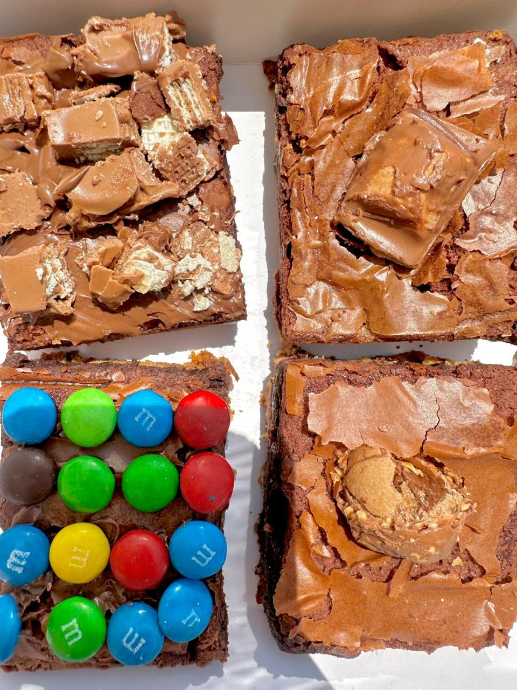

Nuestra Visión
Ser la cadena de brownies líder en Acapulco, reconocida por nuestra excelencia en la preparación de brwonies y nuestro compromiso con la sostenibilidad, creando un espacio donde cada cliente se sienta bienvenido y donde cada mordida de brownie refleje nuestra pasión por lo que hacemos. Convertirnos en la marca favorita de brownies, reconocida por su sabor inigualable y compromiso con la calidad, alcanzando cada vez a más personas que buscan un postre excepcional.
